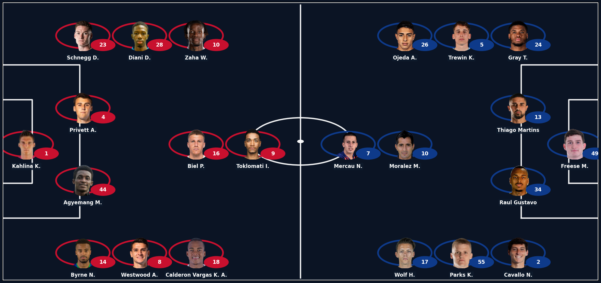
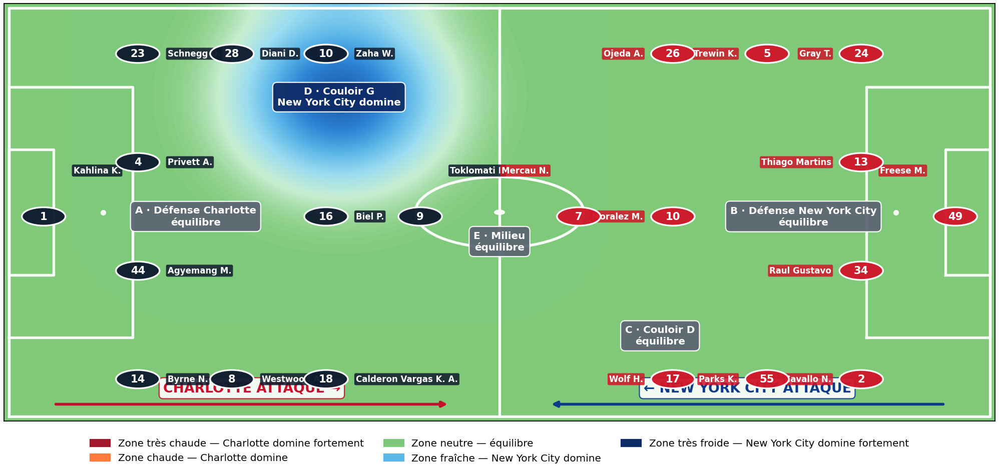

EQUIPE AGENT IA FOOT · ANALYSE MICRO FOTMOB · 5 ZONES TACTIQUES
Charlotte vs New York City
Rapport de force tactique sur le terrain
Zones maîtrisées · Charlotte 0 - 1 New York City (écart -1)
Source XI : Flashscore · Stats joueurs : FotMob (NEXT_DATA) · Heatmap : matplotlib gaussian smooth
01 Formation · Compositions probables Flashscore
Charlotte vs New York City

02 5 blocs tactiques · Lecture déséquilibre par zone
ROUGE = Charlotte domine la zone · BLEU = New York City domine la zone · Δ catégories gagnées par bloc

Convention : Charlotte attaque vers la droite. Numéros = joueurs. Heatmap = 5 zones tactiques (A/B = défense vs attaque, C/D = couloirs, E = milieu créateur).
03 Verdict pari 1X2
REMBOURSÉ SI NUL NEW YORK CITY (DNB)
Confiance : PRUDENTE
Zones maîtrisées : Charlotte 0 · New York City 1 · égalités 4
Modèle : note FotMob moyenne par joueur normalisée par baseline du rôle dans le match (1.0 = joueur moyen pour son poste)
04 Match ouvert ? (Over / Under)
Pari à cibler : Under 2.5 ou nul vierge · Confiance : à confirmer meso
1. Chaque équipe a au moins UN bloc fort (Δ ≥ 3 catégories)
Charlotte : 0 zone(s) · New York City : 0 zone(s)
✗
2. Chaque équipe a un attaquant à 2+ profils confluents
Charlotte max : 0 · New York City max : 0
✗
3. Les DEUX défenses cèdent (blocs A et B remportés par l'attaque)
Défense Charlotte cède : non · Défense New York City cède : non
✗
4. Aucune égalité dans les blocs (match disputé partout)
Au moins une égalité
✗
05 Les 5 zones de confrontation
A · Défense Charlotte
Défense de Charlotte contre l'attaque de New York City
0.98
indice qualité moyen
0.99
équilibre · équilibre (Δ -0.011)
B · Défense New York City
Défense de New York City contre l'attaque de Charlotte
1.01
indice qualité moyen
1.02
équilibre · équilibre (Δ -0.011)
C · Couloir droit
Couloir droit (binôme latéral + ailier)
0.97
indice qualité moyen
1.01
équilibre · équilibre (Δ -0.037)
D · Couloir gauche
Couloir gauche (binôme)
0.98
indice qualité moyen
1.04
New York City domine · léger avantage (Δ -0.060)
E · Milieu créateur
Milieu créateur central
1.00
indice qualité moyen
1.01
équilibre · équilibre (Δ -0.009)
06 Top 3 joueurs décisifs par équipe
Charlotte
Joueurs décisifs
#16 Biel P.
Milieu central
Note 7.34 · 6B / 4P en 12 matchs
Profil : Volume tirs · Créateur
#9 Toklomati I.
Attaquant
Note 6.83 · 4B / 1P en 12 matchs
#10 Zaha W.
Milieu gauche
Note 7.15 · 2B / 1P en 10 matchs
Profil : Volume tirs · Créateur
New York City
Joueurs décisifs
#10 Moralez M.
Milieu central
Note 7.45 · 1B / 6P en 12 matchs
Profil : Passeur · Créateur
#17 Wolf H.
Milieu gauche
Note 7.28 · 5B / 1P en 11 matchs
Profil : Volume tirs
#26 Ojeda A.
Milieu droit
Note 7.14 · 3B / 3P en 12 matchs
Profil : Volume tirs
07 Méthode
Modèle 5 zones tactiques (agnostique de la formation)
S'adapte à toute formation (4-3-3, 4-2-3-1, 3-4-2-1, 3-5-2, 4-4-2…). Pour chaque zone, agrégation Σ stats + moyenne /90 sur les joueurs du groupe, comparaison domaine par domaine (Frappe / Passes / Possession / Défense / Discipline).
Source data
XI résolus via API Flashscore (hash dlie2) + matchDetails FotMob via faille __NEXT_DATA__. Cross-référence par numéro maillot + fuzzy nom. Stats joueurs : 70+ stats par joueur (xG, xA, tirs, tacles, interceptions, etc.).
Échelle de pari 1X2
5-0 : victoire écrasante · Δ ≥ 3 : victoire probable · Δ = 2 sans égalité : double chance · Δ = 1 : DNB · Δ = 0 : pas de pari.